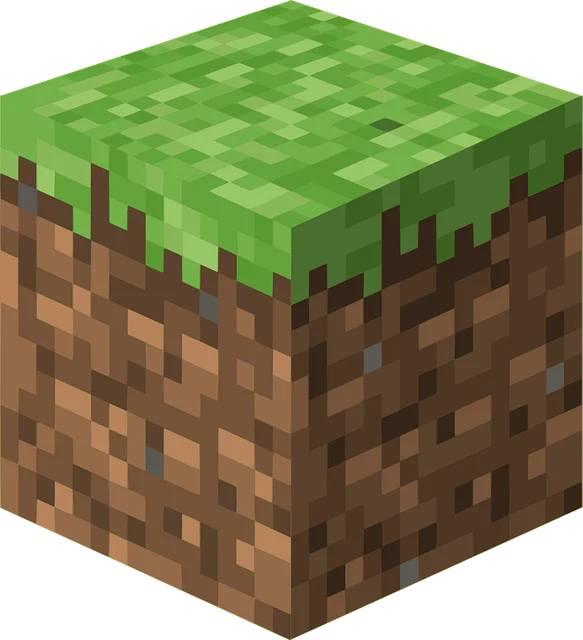
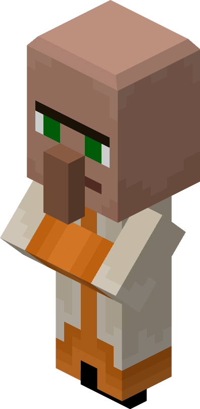
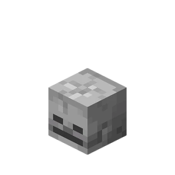
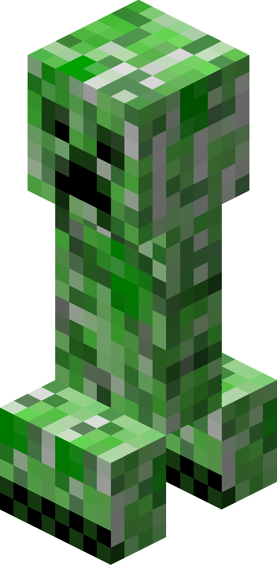

Es uno de los personajes más útiles del juego porque ofrece intercambios, profesiones y vida a las aldeas.
Es uno de los personajes más útiles del juego porque ofrece intercambios, profesiones y vida a las aldeas.


El aldeano es una criatura pacífica que vive en las aldeas y puede comerciar con el jugador usando esmeraldas.
Es uno de los personajes más útiles del juego porque ofrece intercambios, profesiones y vida a las aldeas.
Es uno de los personajes más útiles del juego porque ofrece intercambios, profesiones y vida a las aldeas.
Es uno de los personajes más útiles del juego porque ofrece intercambios, profesiones y vida a las aldeas.


El creeper es un enemigo silencioso que se acerca al jugador y explota cuando está muy cerca.
Es una de las criaturas más famosas de Minecraft porque puede destruir construcciones y causar mucho daño.

El zombi aparece normalmente de noche o en lugares oscuros y persigue al jugador cuando lo detecta.
Aunque no es el monstruo más fuerte, puede ser peligroso cuando aparece en grupo.